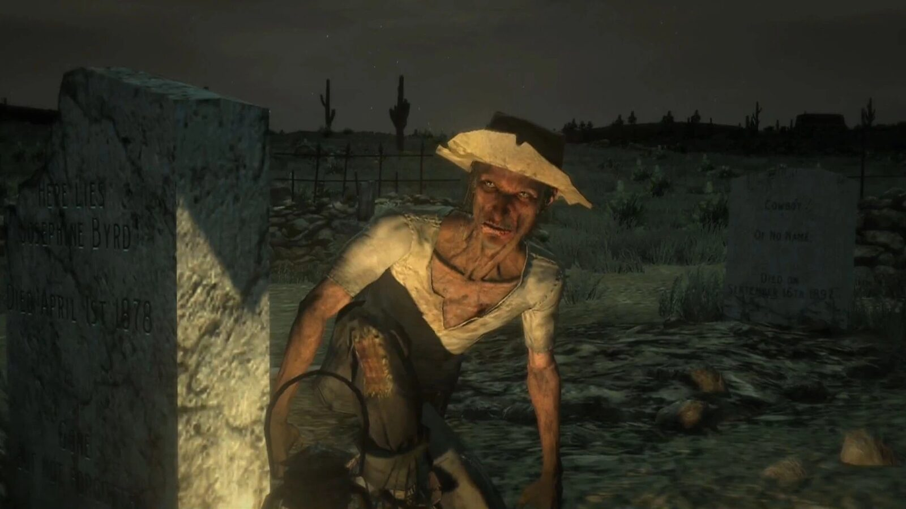
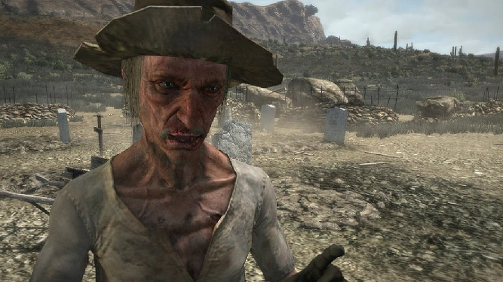
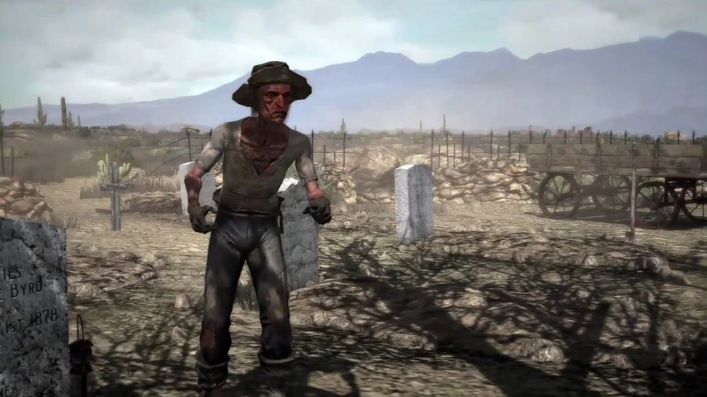
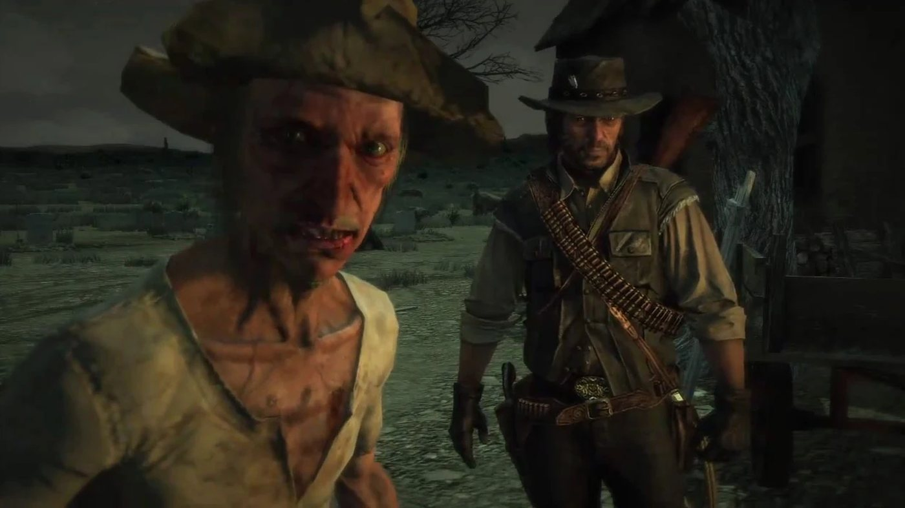
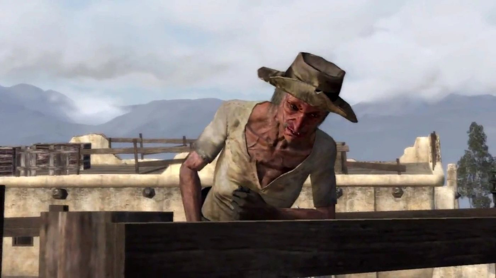
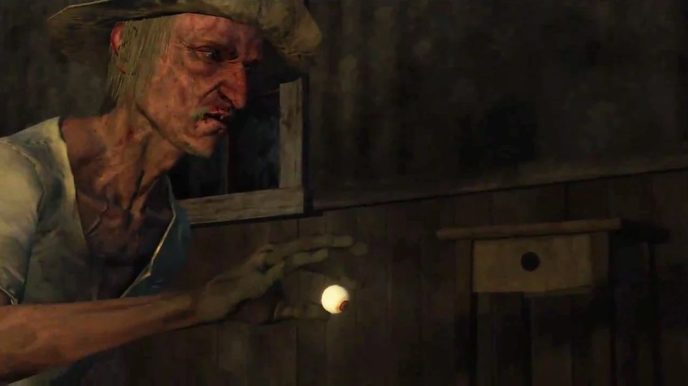

Personnage · New Austin
Seth Briars
Seth Briars est un pilleur de tombes et chasseur de trésor de Red Dead Redemption (2010), dont l'action se déroule en 1911. Nigel West Dickens envoie John Marston le trouver pour entrer dans Fort Mercer, repaire de la bande de Bill Williamson. Seth accepte d'aider, mais seulement une fois sa carte au trésor complète. John l'aide à faire parler son ancien associé, Moses Forth, puis conduit jusqu'à Tumbleweed un chariot de cadavres que Seth fouille en route pour trouver le morceau manquant. Dans le manoir de Tumbleweed, le coffre ne contient qu'un œil de verre. Seth tient parole : il est dans Fort Mercer quand l'assaut commence.
En 1914, le dernier journal du jeu rapporte qu'il est descendu des montagnes de Tall Trees jusqu'à Blackwater avec un énorme butin d'or et de pierres précieuses. Il a la voix de Kevin Glikmann et apparaît aussi dans Undead Nightmare.
- Nom
- Seth Briars (nom de famille imprimé seulement dans le journal de 1914)
- Naissance
- Non précisée dans le jeu ; la fin de la trentaine en 1911 selon le guide de l'édition Game of the Year, cité par le Red Dead Wiki (début des années 1870)
- Statut
- Vivant en 1914 (Blackwater Ledger & Sentinel)
- Nationalité
- Américaine (guide de l'édition Game of the Year)
- Résidence
- Sans domicile fixe au New Austin en 1911, selon le Red Dead Wiki ; The Old Bacchus Place dans Undead Nightmare
- Activité
- Pilleur de tombes et chasseur de trésor ; à l'en croire, il a eu autrefois une affaire
- Famille
- Une femme et des enfants qu'il dit avoir perdus ; sa mère est morte
- Ancien associé
- Moses Forth
- Alliés
- John Marston, Nigel West Dickens
- Armes
- Couteau ; Cattleman Revolver et Repeater Carbine (Red Dead Wiki)
- Jeux
- Red Dead Redemption, Undead Nightmare ; modèle inutilisé dans Red Dead Online
- Voix
- Kevin Glikmann
Biographie
Origines
Seth Briars est un pilleur de tombes et chercheur de trésor qui écume les cimetières du New Austin. D'après le Red Dead Wiki, qui renvoie au guide de l'édition Game of the Year de Red Dead Redemption, il serait né au début des années 1870. Dans "Exhuming and Other Fine Hobbies", il explique qu'il avait autrefois une femme, des enfants et une affaire, et qu'il a tout perdu. Il dit ne plus manger, ne plus dormir, ne plus se laver, qu'il n'a pas pris de bain depuis six mois et qu'il perd ses cheveux. Au début, ajoute-t-il, c'était pour l'argent ; aujourd'hui, il ne sait plus qui il est et ne peut plus s'arrêter. Dans "A Gentle Drive with Friends", il confie qu'il n'aime plus les femmes depuis la mort de sa mère.
Son ancien associé s'appelle Moses Forth, lui aussi pilleur de tombes. Seth l'accuse de lui avoir volé la moitié d'une carte au trésor, et jure qu'il ne lui aurait jamais fait la même chose. Il les décrit tous les deux comme taillés dans le même bois. D'après le Red Dead Wiki, l'affaire qu'il a perdue était une entreprise de chasse au trésor montée avec Moses, mais les transcriptions ne font pas le lien. Selon la page de la mission "Exhuming and Other Fine Hobbies", une réplique qu'on n'entend que si le joueur rate plusieurs fois la chevauchée vers Benedict Point lui fait dire que la dernière chose qu'il a mangée est un corbeau, au goût de ce cochon que son père a tué quand il était enfant. Le Red Dead Wiki précise que ce porcelet était la seule chose qu'il ait jamais aimée.
Red Dead Redemption (1911)
En 1911, des agents du Bureau of Investigation retiennent la femme et le fils de John Marston pour l'obliger à traquer Bill Williamson, retranché à Fort Mercer, dans le New Austin. Seth apparaît dans quatre missions de Red Dead Redemption, toutes au premier acte : les trois de sa propre série, de "Exhuming and Other Fine Hobbies" à "Let the Dead Bury Their Dead", puis "The Assault on Fort Mercer". Il ne joue aucun rôle au Mexique ni dans le West Elizabeth.
Acte I : New Austin
Le numéro 53 du Blackwater Ledger, le premier que John peut acheter, publie l'article "Grave Robber Captured, But Crimes Persist". On y apprend que Moses Forth a été arrêté pour avoir profané et pillé des tombes, et qu'on le tenait pour seul responsable de toute une série de crimes du même genre dans l'Ouest depuis deux ans. Depuis son arrestation, poursuit le journal, d'autres cimetières ont été profanés, et l'on se demande qui d'autre s'y livre. L'article ne nomme pas Seth. À la fin de "You Shall Not Give False Testimony, Except for Profit", Nigel West Dickens envoie John voir un vieil ami à lui, Seth, pour l'aider à faire entrer un chariot dans Fort Mercer. Il prévient que Seth peut paraître un peu bizarre et qu'on le trouve le plus souvent à Coot's Chapel, ce qu'il met sur le compte de sa grande piété.
Dans "Exhuming and Other Fine Hobbies", John trouve Seth dans le cimetière de Coot's Chapel, à Cholla Springs. D'après la page de la mission, il est en train de déterrer Josephine Byrd. Quand John se présente comme un ami de West Dickens, Seth lui dit aussitôt au revoir et déclare qu'il déteste les gens, à qui il doit ses malheurs. Il lui parle ensuite de la moitié de carte qu'on lui a volée (voir Origines) et refuse de dire où elle mène. Moses, explique-t-il, est détenu par la loi à Benedict Point pour avoir exhumé des corps. John propose de l'aider à récupérer la carte, en espérant que Seth lui rendra ensuite la pareille, et les deux hommes se mettent en route.
En chemin, John lui demande comment on peut tomber assez bas pour dépouiller les morts. Seth le traite d'hypocrite : à ses yeux, voler les vivants est pire, et les cadavres s'en moquent. Il dit parler aux morts bien après que tout le monde les a oubliés, et les serrer dans ses bras quand ils pourrissent. Il se demande à voix haute si l'un ou l'autre existe vraiment, et avoue ne pas savoir en quelle année on est. À un moment, il se demande, d'une autre voix, s'il a regardé dans la grotte, se répond qu'il y fait trop noir, puis nie avoir dit quoi que ce soit. C'est Seth qui aborde le sujet de Bill Williamson : il a croisé Williamson, Norman Deek et leurs hommes, qui font parfois appel à lui pour des besognes particulières, car il passe pour faire ce que la plupart des hommes refusent. Il assure à John qu'il entrera sans peine dans Fort Mercer, à condition de l'aider d'abord avec la carte.
À Benedict Point, Seth explique que Moses est enfermé dans une cabane gardée par deux adjoints et demande à John de les attirer derrière une colline. John vole l'un de leurs chevaux et sème ses poursuivants. Seth appelle alors Moses, qui jaillit par la porte et s'enfuit ; John le prend au lasso et le ligote. Pendant qu'on le ramène, Moses lance à John que Seth vendrait sa propre mère et lui propose de partager le trésor. Seth sort son couteau et menace de découper Moses morceau par morceau ; il confie à John qu'il n'a encore jamais entaillé un homme vivant. Moses cède et révèle que sa moitié de carte se trouve à Odd Fellow's Rest. Seth trouve cela dommage, il commençait à y prendre goût, et remarque que Moses s'est fait dessus.
Le vol du cheval a mis la tête de John à prix. Seth n'a pas d'argent, mais il lui remet une lettre de grâce pour effacer la prime au bureau du télégraphe, en paiement de son aide face à Moses. Avant de se séparer, il remercie John, qui répond qu'il lui suffira de l'aider quand il viendra le lui demander. Dans "Liars, Cheats and Other Proud Americans", John annonce à Dickens qu'il a rencontré Seth. Dickens salue sa franchise et prend la défense de son métier (voir Citations). Plus tard, sur la route, John qualifie Seth de profondément dérangé. Quand Dickens avoue un faible pour les épaves de la vie, John lui rétorque que Seth et lui détroussent tous deux les gens, à ceci près que Seth attend au moins qu'ils soient morts.
Dans "A Gentle Drive with Friends", John retourne à Coot's Chapel, où Seth l'attend près d'un chariot. Seth n'est pas encore prêt à l'aider. Après avoir longtemps cherché le dernier morceau de la carte, il en est arrivé à la conclusion que Moses n'a pas menti : le problème venait d'Aiden O'Leary, qui disait avoir le corps qui la portait. O'Leary a été emporté par une épidémie de grippe, dont les victimes n'étaient même pas encore enterrées. Seth a chargé leurs dépouilles dans le chariot. La transcription ne dit pas d'où viennent les corps : la page du personnage sur le Red Dead Wiki parle d'Odd Fellow's Rest, tandis que celle de la mission fait fouiller les corps par Seth à Coot's Chapel. Seth n'a jamais aimé O'Leary et répète une rumeur selon laquelle il aurait couché avec sa sœur. Il veut fouiller les cadavres dans un coin tranquille et prévient que d'autres s'y intéressent.
John conduit le chariot jusqu'à Tumbleweed, Seth installé à l'arrière avec les corps. Seth lui demande de serrer à gauche pour que les habitants d'Armadillo ne voient pas son chargement. Si John possède déjà la mitrailleuse d'Irish, Seth lui transmet un message de Dickens : elle n'a pas de munitions. Seth parle aux cadavres et, quand John s'en offusque, répond qu'il se sent moins seul avec eux qu'au milieu d'une foule. Des chasseurs de trésor attaquent alors le chariot. John les distance ou les abat pendant que Seth fouille les corps ; il y trouve quelques balles et une bouteille d'élixir, puis la carte. Elle indique que le trésor se trouve à Tumbleweed, là où ils se rendent justement. Une fois arrivé, Seth s'assoit pour étudier la carte. Quand John lui demande de filer à Fort Mercer, il répond qu'il le fera une fois son trésor trouvé.
Dans "Let the Dead Bury Their Dead", John trouve Seth dans le cimetière de Tumbleweed, en train de reprocher à un cadavre de ne pas lui adresser la parole et de commenter son odeur. D'après le Red Dead Wiki, il s'agit du corps d'Elenora Riddick. Seth tente de s'éclipser, puis avoue que, selon la carte, le trésor se trouve quelque part dans la grande maison abandonnée. Des chasseurs de trésor qui l'ont suivi ouvrent le feu, l'un d'eux le remerciant d'avoir fait tout le travail. Seth supplie John de trouver le trésor pour lui. Dans son sillage, John se fraie un chemin jusqu'au manoir. La porte d'entrée est fermée à clé : ils passent par les portes de la cave et se battent jusqu'au premier étage.
Seth découvre un coffre et se lance dans une gigue de prospecteur, en répétant qu'il va enfin être riche après toutes ces années. Il fait sauter le cadenas et ne trouve qu'un œil de verre. John éclate de rire. Seth s'effondre et maudit ces menteurs et leurs cartes qui l'ont tourné en ridicule. John lui demande de sécher ses larmes et de l'aider contre la bande de Williamson. Seth répond que la chasse aux trésors des morts ne lui a rien apporté de bon et qu'il est prêt à s'occuper des vivants. Il donne rendez-vous à John et à Dickens à Fort Mercer, quand ils seront prêts.
Dans "The Sport of Kings, and Liars", Dickens annonce que l'équipe sera prête dès que Seth et Irish auront rempli leur part du marché, et John la résume ainsi : un escroc, un pilleur de tombes et un ivrogne. "The Assault on Fort Mercer" réunit John, le marshal Leigh Johnson, ses adjoints Eli et Jonah, Dickens et Seth ; Irish, qui a fourni la mitrailleuse Gatling, manque le combat. Du haut d'une colline, John observe le fort à la longue-vue et aperçoit Seth, déjà dans la place, qui danse sur le mur. Dickens explique qu'il ne faut pas tarder : les hors-la-loi vont vite se lasser des bizarreries de Seth et le jeter dehors, ou lui trancher la gorge, mais pendant une minute il va les amuser, et c'est à ce moment qu'il fera entrer le groupe. Quand le chariot de Dickens arrive, Seth l'accueille à la porte comme s'il recevait chez lui.
Dickens frappe contre la paroi du chariot, et John ouvre le feu avec la Gatling cachée à l'intérieur. Le groupe nettoie le fort et repousse les renforts de la bande, mais Bill n'est pas là : d'après Jonah, un membre de la bande fait prisonnier affirme qu'il est parti pour le Mexique la veille au matin. La transcription ne prête plus aucune réplique à Seth après son accueil à la porte. D'après la page de la mission, c'est sa dernière apparition dans Red Dead Redemption.
Le journal de 1914
Acte III : West Elizabeth
Le sort de Seth est raconté dans le numéro 213 du Blackwater Ledger & Sentinel, daté de 1914, disponible après la dernière mission de John, "The Last Enemy That Shall Be Destroyed", quand on incarne Jack Marston. Son court article "Treasure Found" le présente comme un habitant de la région. On y lit que Seth Briars est descendu des montagnes de Tall Trees jusqu'à Blackwater avec un énorme butin d'or et de pierres précieuses, après lequel il aurait couru pendant des années. Le journal rappelle qu'il fut un proche connu de Moses Forth. Il précise que Seth nie tout lien avec les pillages de tombes par lesquels Forth avait semé la terreur parmi les morts du New Austin trois ans plus tôt. L'article ne dit rien de sa famille, ni de l'endroit où le trésor a été trouvé.
Undead Nightmare (hors canon)
Undead Nightmare, une extension sortie en octobre 2010, ne fait pas partie du canon de la série. Dans "Curious Tales from Blackwater", un groupe de survivants donne à John deux pistes sur l'origine de l'épidémie ; l'une d'elles mène à Seth. John la suit dans "Get Back in That Hole, Partner" jusqu'à The Old Bacchus Place, dans le Hennigan's Stead, où Seth joue au poker avec Moses Forth, devenu mort-vivant. John refuse de se joindre à la partie. Seth minimise l'épidémie. Quand John rapporte que les gens de Blackwater accusent l'œil de verre qu'il a trouvé, Seth entre dans une rage folle, maudit les habitants et John, et pousse Moses à l'attaquer, sans résultat. Pressé de répondre, il envoie John purifier trois cimetières : Coot's Chapel, Odd Fellow's Rest et Tumbleweed.
À son retour, John tombe en pleine fête. Seth a pour cavalière une morte-vivante qu'il appelle Mary Lou, Moses danse avec une certaine Francine, et un autre mort-vivant leur joue du violon. John s'indigne : il a fait le tour des cimetières et l'épidémie est toujours là. Seth lui explique que tout cela a un rapport avec les Aztèques, ou peut-être les Incas, et que la réponse se trouve au Mexique. D'après la page de la mission "Let the Dead Bury Their Dead" et le Red Dead Wiki francophone, c'est à ce moment qu'il avale l'œil de verre.
Seth réapparaît une dernière fois à la fin de l'extension. Dans "A Civilized Man", John abat Abraham Reyes, devenu mort-vivant, à Escalera, et remet en place le masque aztèque que Reyes avait emporté des catacombes, ce qui met fin à l'épidémie. Dans la scène finale, "On a Pale Horse", la famille Marston se retrouve à Beecher's Hope. Trois mois plus tard, on voit Seth voler le masque dans les catacombes d'Escalera. Les morts se relèvent, et John sort de sa tombe. Une fois l'extension terminée, les catacombes sont condamnées, et l'on ne revoit ni Seth ni le masque.
Personnalité
Le Red Dead Wiki cite le guide de l'édition Game of the Year de Red Dead Redemption : "Seth is an American male in his late thirties. He is certifiably insane. He is not unlike an opium addict, only his addiction is money and he has been utterly consumed by it. His gold prospecting partner died on him, with the map to vast riches, and now he digs up graves in search of treasures." (Seth est un Américain qui approche de la quarantaine. Il est fou à lier. Il rappelle un opiomane, sauf que sa drogue à lui, c'est l'argent, qui l'a entièrement dévoré. Son associé dans la prospection d'or est mort en emportant la carte d'un immense trésor, et depuis, il déterre des tombes en quête de richesses.) Dans le jeu, pourtant, son ancien associé Moses Forth est bien vivant en 1911 (voir la biographie).
Dans le jeu, il parle aux cadavres qu'il déterre et transporte, et se répond à lui-même d'une seconde voix, plus aiguë. Il parle souvent de lui à la troisième personne ("Seth's gonna be rich", Seth va être riche). Il appelle ses interlocuteurs partner (l'associé) ou mister. Devant le coffre de Tumbleweed, il passe de l'euphorie aux larmes en quelques secondes (voir la biographie). Dans Undead Nightmare, qui n'appartient pas au canon, il fait des morts-vivants sa compagnie (voir la biographie).
Dans ses propres mots
Sur la route de Benedict Point, dans "Exhuming and Other Fine Hobbies", il résume sa situation : "Oh, I've lost it all partner. My wife, my children, my business. Good riddance to them all. I don't eat, I don't sleep, I don't wash, and I don't care." (j'ai tout perdu, l'ami : ma femme, mes enfants, mon affaire. Bon débarras. Je ne mange pas, je ne dors pas, je ne me lave pas, et je m'en fiche). Il poursuit : "Used to be about the money, but now... I don't know who I am no more. I see myself but it's like I'm lookin' at somebody else, only it's me." (au début, c'était pour l'argent, mais maintenant, je ne sais plus qui je suis. Je me vois, mais comme si je regardais un autre, sauf que c'est moi). Quand John lui conseille de passer à autre chose : "No way I can stop now. It's taken me over." (impossible d'arrêter maintenant, ça m'a pris tout entier).
Sur ses pillages de tombes, pendant la même chevauchée : "I talk to 'em, long after they been forgotten by every other fella. I tell 'em it's alright to be scared and alone." (je leur parle, bien après que tout le monde les a oubliés ; je leur dis qu'ils ont le droit d'avoir peur et de se sentir seuls). Sur les cadavres de son chariot, dans "A Gentle Drive with Friends" : "I feel less alone with them than in a crowd of people. The way I see it, they lost their souls, just like me." (je me sens moins seul avec eux qu'au milieu d'une foule ; à mon avis, ils ont perdu leur âme, tout comme moi).
Noms
Dans les missions, on ne l'appelle jamais autrement que Seth. Son nom de famille n'apparaît qu'imprimé, dans le dernier journal du jeu, le Blackwater Ledger & Sentinel de 1914, qui le nomme "Seth Briars" puis "Mr. Briars". Nigel West Dickens le surnomme "Seth of the dead" (Seth des morts) quand John lui raconte leur rencontre, dans "Liars, Cheats and Other Proud Americans". Moses Forth le traite de "twistly little freak" (sale petit tordu, selon la graphie de la transcription). À Tumbleweed, un chasseur de trésors l'accueille d'un "Thanks for all the hard work, Seth!" (merci pour tout ce travail, Seth !). Dans Undead Nightmare, d'après le Red Dead Wiki, la piste qui mène John jusqu'à lui s'intitule Freak with a glass eye (le monstre à l'œil de verre).
Apparence
C'est un homme décharné, aux joues creuses et aux côtes saillantes, la bouche couverte de plaies, avec une fine moustache pâle et de longs cheveux filasse sous un chapeau à large bord tout cabossé. Il porte une chemise déchirée et crasseuse, ouverte sur la poitrine. Selon le Red Dead Wiki, un bout de corde lui tient lieu de ceinture, et il est presque chauve sous son chapeau.
Relations

John Marston
John vient demander à Seth de l'aider à entrer dans Fort Mercer et accepte de retrouver d'abord sa carte (voir la biographie). John ne cache pas son dégoût. Sur la route de Benedict Point, il lui lance : "I met some sick bastards in my time, Seth, but you, you're special." (j'ai croisé des tordus dans ma vie, Seth, mais toi, tu es un cas à part). Quand Seth énumère tout ce qu'il a abandonné, John répond : "I know, I can smell you from here." (je sais, je te sens d'ici). Dans "A Gentle Drive with Friends", John le traite de malade ; Seth lui rétorque qu'il lui rappelle pourquoi il déteste les gens, et que pour un homme qui tue autant, il a un drôle de problème avec les morts (voir Citations).
Après l'épisode de l'œil de verre, Seth accepte d'aider John à Fort Mercer et tient parole (voir la biographie). Dans Undead Nightmare, qui n'appartient pas au canon, John va de nouveau le trouver (voir la biographie). D'après le Red Dead Wiki, John lâche parfois "Seth, I'm sorry about all the insults" (Seth, désolé pour toutes ces insultes), "Seth, finally I've joined you" (Seth, me voilà enfin des vôtres) ou "Seth, how do you enjoy this?" (Seth, ça te plaît ?) en fouillant les corps des morts-vivants.

Nigel West Dickens
Dickens est le vieil ami qui envoie John trouver Seth à Coot's Chapel. Dans "Liars, Cheats and Other Proud Americans", il en parle avec chaleur, alors que John le juge profondément dérangé et compare les deux hommes (voir la biographie et les citations). À Fort Mercer, Dickens compte sur Seth pour occuper les hors-la-loi le temps de faire entrer le chariot (voir la biographie).
Moses Forth
Son ancien associé, qu'il accuse d'avoir pris la moitié de la carte. Seth le présente à John comme "My partner. My boy. My man." (mon associé, mon gars, mon homme) et dit d'eux deux : "Him, me, we the same. The self same." (lui, moi, on est pareils, exactement pareils). Ligoté à Benedict Point, Moses tente de retourner John contre Seth (voir la biographie pour le couteau et les aveux). Dans "A Gentle Drive with Friends", Seth conclut que Moses ne lui a pas menti et s'en prend à Aiden O'Leary. En 1914, Seth assure à la presse de Blackwater n'avoir rien à voir avec les pillages de tombes imputés à Moses (voir la biographie).
Dans Undead Nightmare, qui n'appartient pas au canon, Moses est devenu un mort-vivant : il joue aux cartes avec Seth à The Old Bacchus Place, puis danse avec Francine à la fête de Seth (voir la biographie).
Aiden O'Leary
Seth finit par accuser cet homme, qui disait avoir le corps portant le morceau manquant de la carte. D'après Seth, O'Leary a succombé à l'épidémie de grippe, dont les victimes n'étaient pas encore enterrées (voir la biographie). Seth ajoute : "Apart from that Aiden O'Leary fella, I never liked him." (sauf ce type, Aiden O'Leary, je ne l'ai jamais aimé).

Bill Williamson
Seth connaît la bande que traque John et lui offre un moyen d'entrer dans Fort Mercer, une fois la carte retrouvée (voir la biographie). Le jour de l'assaut, Seth est déjà dans la place et Bill est déjà parti au Mexique (voir la biographie).

Irish
Tous deux font partie du plan contre Fort Mercer, sans partager aucune scène. Quand Seth lui transmet, sur la route de Tumbleweed, le message de Dickens au sujet de la mitrailleuse (voir la biographie), John répond : "Sounds like I need to pay Irish another visit." (on dirait que je vais devoir rendre une nouvelle visite à Irish).
The Treasure Hunters
Une bande armée lancée sur le même trésor. Elle prend le chariot en chasse sur la route de Tumbleweed, puis attaque Seth et John dans la ville (voir la biographie). Seth : "The bastards followed me here!" (ces salauds m'ont suivi jusqu'ici !). D'après le Red Dead Wiki, ses membres partagent les vêtements usés et la crasse de Seth, et John peut plus tard revêtir une tenue de chasseur de trésors (Treasure Hunter Outfit) pour entrer sans risque dans leur repaire.
His family
Les jeux ne montrent aucun membre de sa famille. Seth dit avoir perdu sa femme, ses enfants et son affaire (voir Dans ses propres mots, plus haut). De sa mère, il dit dans "A Gentle Drive with Friends" : "I don't like women, partner. I don't. Not since mammy died." (j'aime pas les femmes, l'ami, non. Plus depuis que maman est morte). Sur son père, voir Origines.
Pillage de tombes, armes et cheval
Le pillage de tombes
John le trouve d'abord à l'ouvrage dans le cimetière de Coot's Chapel, puis dans celui de Tumbleweed. Seth n'attend pas que les morts soient enterrés : il charge sur un chariot les corps de victimes de la grippe et les fouille en route (voir la biographie).
Côté jeu
Seth confie trois missions dans Red Dead Redemption et une dans Undead Nightmare ; le tableau des missions les recense, avec les mécaniques de jeu que chacune introduit. Faute d'argent, Seth rémunère l'aide de John contre Moses Forth avec une lettre de grâce, qui efface la prime due au vol du cheval d'un représentant de la loi. Le joueur peut aussi payer la prime et garder la lettre. Ses missions de Red Dead Redemption échouent s'il est tué ou abandonné.
Armes et cheval
À Benedict Point, il sort un couteau pour menacer Moses Forth (voir la biographie). Le Red Dead Wiki lui attribue en outre un Cattleman Revolver et une Repeater Carbine. Il se rend à Benedict Point sur son propre cheval, et la mission échoue si ce cheval est tué. D'après le Red Dead Wiki, il crie "Fly! Fly!" (file ! file !) quand il chevauche. Dans Undead Nightmare, qui n'appartient pas au canon, s'en prendre à Seth, à Moses ou aux morts-vivants qui dansent fait échouer "Get Back in That Hole, Partner". Selon la page de la mission, Seth ne dégaine un revolver que s'il réchappe à un bâton de dynamite ou à un cocktail incendiaire lancé sur la fête à la fin de la mission : il tire alors sur John et tente de s'enfuir.
Missions
Seth propose une série de trois missions principales dans le premier acte de Red Dead Redemption, toutes dans le New Austin, numérotées de 13 à 15 dans l'ordre de l'histoire. La première, "Exhuming and Other Fine Hobbies", se débloque une fois terminées "Wild Horses, Tamed Passions", une mission de Bonnie MacFarlane, et "You Shall Not Give False Testimony, Except for Profit", une mission de Nigel West Dickens. Elle introduit les avis de recherche, les primes et le ligotage, et débloque la mission d'inconnu "Funny Man". "A Gentle Drive with Friends" introduit les cocktails incendiaires. La série de Seth, qui se termine par "Let the Dead Bury Their Dead", fait partie des quatre à boucler avant "The Assault on Fort Mercer", la mission de Leigh Johnson, avec celles de Johnson, de Dickens et d'Irish. Dans Undead Nightmare, Seth confie une mission ; la terminer, ainsi que "A Cure for Most of What Ails You", de Dickens, débloque le succès "Judge A Man By The...".
Apparitions
| Mission | Acte | Rôle de Seth |
|---|---|---|
| Exhuming and Other Fine Hobbies | Acte I : New Austin | Donneur de mission. Surpris en train de piller une tombe à Coot's Chapel ; avec l'aide de John, force Moses Forth à révéler où se trouve sa moitié de carte. Récompenses : 25 points de célébrité (75 avec la médaille d'or) et une lettre de grâce. |
| A Gentle Drive with Friends | Acte I : New Austin | Donneur de mission. Fouille les cadavres à l'arrière du chariot que John conduit jusqu'à Tumbleweed, et trouve la carte. Récompenses : 10 dollars, 2 médicaments et 75 points de célébrité (125 avec la médaille d'or). |
| Let the Dead Bury Their Dead | Acte I : New Austin | Donneur de mission. Conduit John jusqu'au manoir de Tumbleweed, où le coffre ne contient qu'un œil de verre. Récompenses : 10 dollars, 150 points de célébrité (200 avec la médaille d'or) et 100 points d'honneur. |
| The Assault on Fort Mercer | Acte I : New Austin | Déjà dans le fort, distrait la bande et accueille le chariot de Dickens à la porte. Sa dernière apparition dans l'histoire. |
| Get Back in That Hole, Partner | Undead Nightmare | Donneur de mission. Envoie John purifier trois cimetières, puis l'oriente vers le Mexique. Récompense : The Old Bacchus Place comme refuge. |
| On a Pale Horse | Undead Nightmare | Aperçu en train de voler le masque dans les catacombes d'Escalera, ce qui relève de nouveau les morts. |
Missions où il est évoqué
| Mission | Acte | Lien avec Seth |
|---|---|---|
| You Shall Not Give False Testimony, Except for Profit | Acte I : New Austin | Dickens envoie John voir Seth à Coot's Chapel. |
| Liars, Cheats and Other Proud Americans | Acte I : New Austin | John annonce à Dickens qu'il a rencontré Seth ; les deux hommes parlent de lui en chemin. |
| The Sport of Kings, and Liars | Acte I : New Austin | Dickens annonce que l'équipe sera prête quand Seth et Irish auront fait leur part. |
| Curious Tales from Blackwater | Undead Nightmare | Des survivants citent un détraqué à l'œil de verre parmi les causes possibles de l'épidémie. |
Citations
Les répliques ci-dessous sont citées dans leur version originale anglaise, suivies d'une traduction. Les répliques de mission sont vérifiées sur les transcriptions du Red Dead Wiki. Celles d'Undead Nightmare proviennent de la liste de citations et des pages de missions du wiki, faute de transcription pour les missions de l'extension.
Ce que les autres disent de lui
I want you to go see my old friend, Seth. He can come across as a little curious, but I'm sure you two will get on. He's most often found at Coot's Chapel. He's very devout.
Nigel West Dickens, You Shall Not Give False Testimony, Except for Profit (RDR1, acte I). Traduction : « Je veux que tu ailles voir mon vieil ami Seth. Il peut paraître un peu étrange, mais je suis sûr que vous vous entendrez. On le trouve le plus souvent à Coot's Chapel. Il est très pieux. »Yes, contemporary society is remarkably harsh on professional exhumers, but did you know, in Ancient Egypt, it was an art form more highly valued than literature? I believe Seth comes from that school of thought.
Nigel West Dickens, Liars, Cheats and Other Proud Americans (RDR1, acte I). Traduction : « Oui, la société moderne est remarquablement dure envers les exhumateurs de métier, mais saviez-vous que dans l'Égypte ancienne, c'était un art plus prisé que la littérature ? Je crois que Seth est de cette école. »A connection with them, more like. You and Seth have a lot in common. You both rob people, for one. Mind you, at least he waits until they're dead.
John Marston, Liars, Cheats and Other Proud Americans (RDR1, acte I), quand Dickens avoue un faible pour les laissés-pour-compte. Traduction : « Des affinités avec eux, plutôt. Toi et Seth, vous avez beaucoup en commun. Vous volez les gens, déjà. Remarque, lui, au moins, il attend qu'ils soient morts. »You must be stupid, trustin' that crazy bastard. Seth'd sell his own mother. We'll split it between us, just me and you.
Moses Forth à John, Exhuming and Other Fine Hobbies (RDR1, acte I), ligoté. Traduction : « Faut être idiot pour faire confiance à ce cinglé. Seth vendrait sa propre mère. On partagera entre nous, rien que toi et moi. »Seth has managed to get himself inside, but we can't leave it too long, or they will soon realize how very curious he is, and remove him from the premises, or slit his throat and watch him bleed to death, but for a minute, he will delight and amuse them. That's when he'll get us inside.
Nigel West Dickens, The Assault on Fort Mercer (RDR1, acte I), pendant que Seth danse sur le mur. Traduction : « Seth a réussi à entrer, mais il ne faut pas tarder, sinon ils vont vite comprendre à quel point il est bizarre et le jeter dehors, ou lui trancher la gorge et le regarder se vider de son sang ; mais pendant une minute, il va les ravir et les amuser. C'est là qu'il nous fera entrer. »It's the glass eye! The freak with the glass eye! He caused this!
Lucille Billingsgate, Undead Nightmare, sur la cause de l'épidémie (citée sur sa page du Red Dead Wiki). Traduction : « C'est l'œil de verre ! Le détraqué à l'œil de verre ! C'est lui qui a fait ça ! »
Red Dead Redemption, acte I
Look at me! Look. Scrambling around, looking for maps, half insane. I ain't washed in 6 months, my hair's fallin' out, my mind's going.
Exhuming and Other Fine Hobbies (RDR1, acte I), à Coot's Chapel, quand John lui demande dans quel pétrin il est. Traduction : « Regarde-moi ! Regarde. À courir après des cartes, à moitié fou. Je me suis pas lavé depuis six mois, je perds mes cheveux, je perds la tête. »Marston: How can you sink that low? Diggin' up graves and lootin' from the dead. / Seth: Hypocrites, the whole damn lotta you! Are you sayin' it's better to steal from the livin'? They're corpses. They don't care none.
Exhuming and Other Fine Hobbies (RDR1, acte I), en route vers Benedict Point. Traduction : « Marston : Comment peut-on tomber aussi bas ? Déterrer des tombes et dépouiller les morts. / Seth : Tous des hypocrites, autant que vous êtes ! Tu veux dire que c'est mieux de voler les vivants ? Ce sont des cadavres. Ils s'en fichent. »Seth: Are we really livin' anyway? Do you exist outside my mind? Maybe we're both havin' the same dream and when we wake up we'll die? / Marston: I certainly seem to be in some kind of nightmare.
Exhuming and Other Fine Hobbies (RDR1, acte I). Traduction : « Seth : Est-ce qu'on est vraiment vivants, d'abord ? Est-ce que tu existes en dehors de ma tête ? Peut-être qu'on fait le même rêve et qu'on mourra en se réveillant ? / Marston : En tout cas, j'ai l'impression d'être dans une sorte de cauchemar. »Seth: Have you looked in the cave, Seth? No, it's very dark. / Marston: What did you say? / Seth: I-I didn't say nothin'.
Exhuming and Other Fine Hobbies (RDR1, acte I), Seth se répondant à lui-même. Traduction : « Seth : T'as regardé dans la grotte, Seth ? Non, il fait très noir. / Marston : Qu'est-ce que tu as dit ? / Seth : J-j'ai rien dit. »Marston: Seth, I need someone who can get a wagon inside Fort Mercer. I was told you could help me but I'm not sure you even know what day it is. / Seth: I don't. I can't even tell you what year it is.
Exhuming and Other Fine Hobbies (RDR1, acte I). Traduction : « Marston : Seth, j'ai besoin de quelqu'un qui puisse faire entrer un chariot dans Fort Mercer. On m'a dit que tu pourrais m'aider, mais je ne suis même pas sûr que tu saches quel jour on est. / Seth : Je ne sais pas. Je ne pourrais même pas te dire en quelle année on est. »Seth: Then I'm gonna cut you up piece by piece, 'til ya find your tongue. / Marston: Friend, this man's gone crazy in the sun. I suggest you take my advice and start talking. / Seth: Shut up, Marston, I wanna cut into a bonafide man's flesh! Ain't never cut into a live one before.
Exhuming and Other Fine Hobbies (RDR1, acte I), en menaçant Moses Forth à Benedict Point. Traduction : « Seth : Alors je vais te découper morceau par morceau, jusqu'à ce que ta langue se délie. / Marston : L'ami, cet homme a pris un coup de soleil sur la tête. Je te conseille de m'écouter et de parler. / Seth : La ferme, Marston, je veux entailler de la vraie chair d'homme ! J'en ai jamais découpé un vivant. »I needs the map, partner. I needs it.
A Gentle Drive with Friends (RDR1, acte I), à Coot's Chapel, près du chariot de cadavres. Traduction : « Il me la faut, cette carte, l'ami. Il me la faut. »Marston: You're not even going to wait until they're buried before you... / Seth: Well they don't care, do ya boys? Honest folk, off to a better place.
A Gentle Drive with Friends (RDR1, acte I), à propos des corps dans le chariot. Traduction : « Marston : Tu n'attends même pas qu'ils soient enterrés pour... / Seth : Bah, ça leur est égal, pas vrai, les gars ? D'honnêtes gens, partis pour un monde meilleur. »Seth: You remind me why I hate people. For a man who kills so much, you sure seem to have a problem with the dead. Life kills everyone in the end. They ain't so different from you and me. / Marston: Aside from them being dead and rotting, I guess they ain't...
A Gentle Drive with Friends (RDR1, acte I), quand John le traite de malade. Traduction : « Seth : Tu me rappelles pourquoi je déteste les gens. Pour un homme qui tue autant, tu as l'air d'avoir un sacré problème avec les morts. La vie finit par tuer tout le monde. Ils ne sont pas si différents de toi et moi. / Marston : À part qu'ils sont morts et qu'ils pourrissent, je suppose que non... »Christ alive! It's the map! I found the map! Go left up here! Looks like the treasure's in Tumbleweed! That's where I was headed! It's fate!
A Gentle Drive with Friends (RDR1, acte I), en fouillant les corps pendant la poursuite. Traduction : « Bon sang de bonsoir ! C'est la carte ! J'ai trouvé la carte ! À gauche, là-haut ! On dirait que le trésor est à Tumbleweed ! C'est là que j'allais ! C'est le destin ! »Seth: Finally! Months of searching! I'm gonna be rich beyond my wildest dreams! / Marston: Maybe then you can take a bath.
A Gentle Drive with Friends (RDR1, acte I), à l'arrivée à Tumbleweed. Traduction : « Seth : Enfin ! Des mois de recherches ! Je vais être riche au-delà de mes rêves les plus fous ! / Marston : Tu pourras peut-être enfin prendre un bain. »Yeee Hooo! Finally, I see the light at the end of this very long, long tunnel. Seth's gonna be rich after all these years... It's silk sheets and Parisian whores from now on, mister!
Let the Dead Bury Their Dead (RDR1, acte I), en découvrant le coffre. Traduction : « Youhou ! Enfin, je vois la lumière au bout de ce très, très long tunnel. Seth va être riche, après toutes ces années... Désormais, ce sera draps de soie et putains parisiennes, mon gars ! »Seth: What the goddamn hell is this? A glass eye? / Marston: I'm sure whoever that belonged to treasured it very much.
Let the Dead Bury Their Dead (RDR1, acte I), à l'ouverture du coffre. Traduction : « Seth : Qu'est-ce que c'est que ce foutu bordel ? Un œil de verre ? / Marston : Je suis sûr que son propriétaire y tenait comme à un trésor. »Hunting dead men's treasure ain't done me no favors. Sure. Sure, I'm ready for the living. I'll see you and Mr. West Dickens over at Fort Mercer when you gentlemen is ready.
Let the Dead Bury Their Dead (RDR1, acte I), dernière réplique de sa série. Traduction : « Courir après le trésor des morts ne m'a rien rapporté de bon. D'accord. D'accord, je suis prêt pour les vivants. On se retrouve à Fort Mercer, toi et M. West Dickens, quand vous serez prêts, messieurs. »Hey, hey there! Come on in, come on in. Welcome to my humble abode! Come on.
The Assault on Fort Mercer (RDR1, acte I), en accueillant le chariot de Dickens à la porte. Traduction : « Hé, salut ! Entrez, entrez. Bienvenue dans mon humble demeure ! Allez, venez. »
Undead Nightmare (hors canon)
It ain't nothin'.
Get Back in That Hole, Partner (Undead Nightmare), quand John l'interroge sur l'épidémie (encadré de la page de la mission). Traduction : « C'est rien du tout. »Folks? Folks! Folks! Damn them folks, John Marston! Damn them! And damn you!
Get Back in That Hole, Partner (Undead Nightmare), quand John lui apprend que Blackwater accuse son œil de verre (liste de citations du wiki). Traduction : « Les gens ? Les gens ! Les gens ! Au diable les gens, John Marston ! Au diable ! Et toi avec ! »Moses wouldn't hurt a fly, would you darling?
Undead Nightmare, à John (liste de citations du wiki). Traduction : « Moses ne ferait pas de mal à une mouche, pas vrai, mon chou ? »Moses is having a tough time right now. Ain't ya, pal?
Get Back in That Hole, Partner (Undead Nightmare), à la table de jeu (légende d'une image du wiki). Traduction : « Moses traverse une mauvaise passe en ce moment. Pas vrai, mon vieux ? »
Conception et interprétation
Le casting
Seth Briars apparaît dans Red Dead Redemption et dans son extension Undead Nightmare, sortis tous deux en 2010. Wikipédia attribue le rôle à Kevin Glikmann dans les deux jeux. D'après le Red Dead Wiki, Glikmann est un acteur américain dont la filmographie compte aussi les films L'Échange (Changeling) et Hot Tamale, ainsi que le jeu vidéo Splinter Cell: Double Agent. Aucune des sources consultées ne nomme d'interprète pour la capture de mouvement de Seth.
Le modèle inutilisé de Red Dead Online
Seth n'apparaît pas dans Red Dead Redemption 2. Le 17 août 2020, PCGamesN (Iain Harris) rapporte que le dataminer VideoTech l'a découvert dans les fichiers de Red Dead Online, où il avait été ajouté avec la première mise à jour du jeu, en 2018. Selon l'article, le personnage dispose de 41 répliques entièrement enregistrées, dont l'une évoque une mission, et il a soit été abandonné, soit mis de côté pour plus tard. D'après le Red Dead Wiki, ce modèle inutilisé reprend, légèrement modifié, le visage de John Marston.
Accueil
Classements de personnages
Le 4 novembre 2016, Dennis Patrick, de Gameranx, cite Seth parmi les personnages qu'il aimerait revoir dans Red Dead Redemption 2 : "Everyone remembers Seth Briars, you might not remember the name, but you can't forget the crazy lunatic speaking to the dead and hunting for unimaginable wealth." (tout le monde se souvient de Seth Briars ; on a peut-être oublié son nom, mais pas ce fou furieux qui parle aux morts et court après des richesses inimaginables). Dans une liste des dix meilleurs personnages de la série Red Dead Redemption publiée par Sportskeeda (page modifiée pour la dernière fois le 13 août 2023), Aniket Mukherjee le classe huitième, entre Irish (neuvième) et Leigh Johnson (septième), en saluant "his quirky personality and unwavering determination to discover hidden treasures" (sa personnalité excentrique et sa détermination sans faille à dénicher des trésors).
Rob Wiethoff
D'après le Red Dead Wiki, Rob Wiethoff, l'interprète de John Marston, a désigné Seth comme son personnage préféré de Red Dead Redemption. Le wiki renvoie à un entretien accordé à la chaîne YouTube Dan Allen Gaming, mis en ligne le 27 mars 2021.
Autres médias et postérité
The Man from Blackwater (2010)
Seth apparaît dans Red Dead Redemption: The Man from Blackwater, un court métrage réalisé avec le moteur du jeu par John Hillcoat, diffusé par Fox le 29 mai 2010, puis par 5USA au Royaume-Uni le 5 juin 2010. Le film reprend le premier acte, dont sa rencontre avec John et la confrontation avec Moses Forth de "Exhuming and Other Fine Hobbies". Son dernier segment bouscule l'ordre des événements : la carte mène à Fort Mercer, et Seth trouve l'œil de verre dans une pièce du fort, une scène tirée du manoir de Tumbleweed de "Let the Dead Bury Their Dead". D'après la liste de citations du Red Dead Wiki, il y dit : "Put me on a cross and paint my picture" (clouez-moi sur une croix et faites mon portrait) et "I'm gonna make you a nose check."
Multijoueur
Seth devient un modèle de personnage jouable du multijoueur de Red Dead Redemption avec le Liars and Cheats Pack, présenté en détail par Rockstar le 27 août 2010 et sorti le 21 septembre 2010. On le choisit dans la section Redemption de l'Outfitter, aux côtés de John, d'Abigail, de Jack, de Bonnie MacFarlane, de Leigh Johnson, de Luisa Fortuna et de Nigel West Dickens. Les versions de Red Dead Redemption sorties sur PlayStation 4 et Nintendo Switch le 17 août 2023, puis sur PC le 29 octobre 2024, ne comprennent pas le multijoueur.
Promotion
Rockstar a diffusé une illustration officielle de Seth pour Red Dead Redemption ; d'après le Red Dead Wiki, il y a les cheveux plus longs et plus épais que dans le jeu. Toujours selon ce wiki, la première bande-annonce d'Undead Nightmare s'ouvre sur Moses Forth en train de déterrer une tombe à Coot's Chapel, avant qu'un Bruiser mort-vivant ne le charge et ne le dévore, et montre brièvement la pierre tombale de Josephine Byrd tachée de sang.
Anecdotes
Red Dead Redemption
- Dans "Let the Dead Bury Their Dead", Seth traverse la cave du manoir de Tumbleweed en passant à côté d'un vrai trésor : celui que désigne la troisième carte du défi de chasseur de trésor, qui donne le rang 4. Si le joueur l'a déjà déterré, il n'y a plus rien.
- Autour des feux de camp, des inconnus racontent parfois l'histoire d'une famille de Tumbleweed dont il ne serait resté qu'un œil de verre. Le Red Dead Wiki en donne deux versions : sur la page du personnage, la famille est abattue et ses biens détruits ; sur celle de la mission, elle est dévorée par un fantôme.
- Le titre "Let the Dead Bury Their Dead" reprend une parole de Jésus (Matthieu 8:22 et Luc 9:60), adressée à un disciple qui demande d'abord à enterrer son père.
- D'après la page de la mission "Exhuming and Other Fine Hobbies", Seth ne meurt pas si John lui tire dessus au début : il se relève et s'enfuit.
- D'après la page de la mission "A Gentle Drive with Friends", le premier corps du chariot reprend le modèle de Sam Odessa, retrouvé mort près de Tumbleweed. Si le joueur traverse Armadillo malgré le conseil de Seth, des répliques supplémentaires se déclenchent, et un représentant de la loi qui voit le chariot arrêté trop longtemps vient l'inspecter, ce qui fait échouer la mission.
- D'après le Red Dead Wiki, Josephine Byrd est morte le 1er avril 1878. Sa tombe peut être ouverte avec un cocktail incendiaire, et son corps porte le même pantalon que Seth.
- D'après le Red Dead Wiki, le père de Moses Forth, Herbert Forth, est enterré au cimetière de Tumbleweed, sous une pierre tombale où l'on lit "This is one grave he cannot rob." (voilà une tombe qu'il ne pourra pas piller).
- Le numéro 56 du Blackwater Ledger publie l'article "More Ghosts Take up Residence at Tumbleweed". On y lit que des dizaines d'hommes de plus ont trouvé la mort à Tumbleweed, et que des rumeurs parlent de richesses cachées dans le manoir abandonné de la ville. Seth n'y est pas nommé.
Undead Nightmare (hors canon)
- D'après le Red Dead Wiki, Seth et la nièce de Mordecai Robbard sont les seuls personnages que les morts-vivants n'attaquent pas au fil de l'histoire, et Seth et Nigel West Dickens les seuls personnages majeurs non infectés qui ne prennent aucune part aux combats contre eux.
- Les morts-vivants de la fête de Seth sont insensibles aux balles, mais un bâton de dynamite ou un cocktail incendiaire peut les tuer (pour la réaction de Seth, voir Armes et cheval). D'après le Red Dead Wiki, tirer sur la lanterne suspendue au-dessus des danseurs enflamme l'un d'eux et lance les autres à l'attaque, et les piétiner avec War les fait brûler pendant que Seth prend la fuite. John peut abattre Seth, mais cela ne change rien : il vole quand même le masque à la fin de l'extension.
- "Get Back in That Hole, Partner" est aussi le titre d'un morceau de la bande originale d'Undead Nightmare.
Galerie




